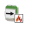
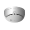
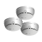
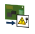

CS1115/FC330 Symbols
When integrating the CS1115 FC330 extension, the following symbols are available in graphics for detectors, zones, and panels objects:
Control Zone Symbols
DYN_3D_Control_Fire_None_Horizontal_001 |
 |
|
Detector Symbols
DYN_3D_Detector_Ceiling_None_Horizontal_001 |
 |
|
DYN_3D_Callpoint_Manual_None_Horizontal_001 |
|
Fire Zone Symbols
DYN_3D_Detection_Zone_None_Horizontal_001 |
 |
|
DYN_3D_Callpoint_ManualZone_None_Horizontal_001 |
|
Input Symbols
DYN_3D_EU_1Z1D_Zone_Input_None_Horizontal_002 |
|
Power Supply Symbols
DYN_3D_PowerSupplyModule_Fire_None_Horizontal_001 |
 |
|
Remote Transmission Symbols
DYN_3D_Control_Notification_None_Horizontal_001 |
|
Fire Unit Symbols
DYN_3D_Terminal_Fire_None_Horizontal_003 |
|